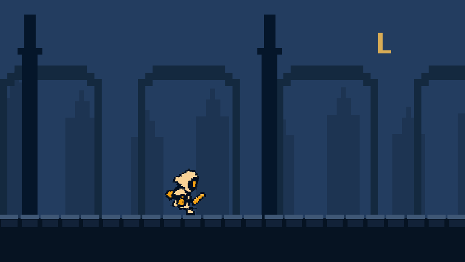
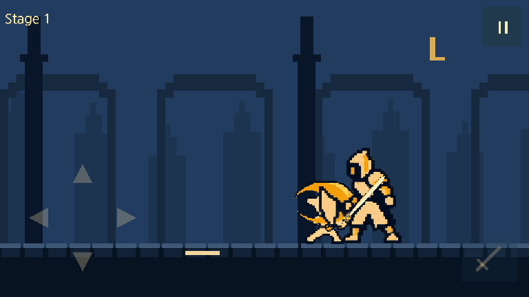
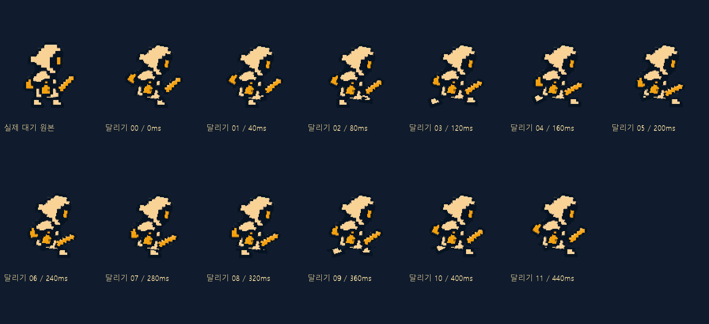

종의 기사
문은 안에서 잠겼다.
원래 Idle의 의상과 무기를 보존하는 새 달리기를 검토합니다.
이동과 달리기 재생 속도를 절반으로 낮추고, 보스 처치 뒤 하단 대사로 진실을 잇습니다.
종이 멎은 뒤 밤이 끝나지 않는 마을. 작은 종지기 온은 손안의 불씨를 들고 탑에 들어선다. 다섯 종을 깨우면 아침이 돌아온다고 믿지만, 보스를 쓰러뜨릴 때마다 탑이 감춰 온 기록이 드러난다. 마지막에 해야 할 일은 새로운 누군가를 종의 연료로 바치는 것이 아니라, 빼앗긴 시간을 주인에게 돌려주는 것이다.
서사·하단 대사 개정안 · Unity 미적용 다섯 구역의 이야기·대사·저장 규칙 전체 보기 ↗
문은 안에서 잠겼다.
사슬에 묶인 것은 마을의 내일.
보호를 명분으로 빼앗은 시간.
불씨는 연료가 아닌 돌려줄 시간.
모든 시간을 주인에게 돌려준다.
장병기를 바닥에 짚고 한쪽 무릎을 꿇는다. 후광이 갈라지고 갑옷이 네모 도트로 떨어진다. 몸이 사라진 자리에서 안쪽 빗장이 내려가고 황동 핵 하나가 잠깐 남는다.
대사는 한 번에 한 줄씩 표시하며 화면을 탭해 다음 줄로 넘깁니다. 건너뛰어도 유물 선택은 남습니다. 캐릭터별 첫 보스 처치에 자동 재생하고 반복 도전에서는 생략합니다.
다음 대사: “사슬 끝을 봐라. 묶인 건 우리가 아니다.”
온의 응답: “그럼, 무엇을 가둔 거지?”
공격 영역에서 대상을 고르고 ▶ 공격 재생을 누르세요. 새 공격마다 방향을 정하며, 슬라이더로 되돌려 볼 때는 같은 결과를 유지합니다.





PixelLab 원본 프레임·시트 검토 · 이전 v7 보드 · 이전 v6 보드 · 이전 v5 접근·복귀 · 이전 v4 생성 후보 · 이전 v3 기획 모형 · 이전 v2
온은 유지하고 일반 몬스터는 높이2.0, 중간 보스3.2, 보스4.0으로 확대합니다. 같은 구도로 현재 실행본과 제안을 비교하세요. 기본 체급 확대와 등장 카메라 줌은 별개입니다.
| 캐릭터 | 현재 → 제안 | 온 대비 | 1280×720 높이 |
|---|
대기 기준 온 발(500,590), 적 발(900,590). 공격 접근 지점은 일반 적x780, 수문장x690, 종의 기사x680입니다. 모자·후광·무기를 포함한 대기 그림의 전체높이 기준이며, 포즈마다 크기를 다시 맞추지 않습니다. 체급·표시 위치 변경만으로 피해량·회피 판정·무적을 추가하지 않습니다.
새 적과 조우한 뒤 Stage 도트 조립·표시500ms → 고정된 큰 줌 → 얼굴 원형 파동과 공격 동작1회 → 줌아웃 순서입니다. 공격 동작은 피해·투사체·공격 예고를 만들지 않는 표시용 클립으로 제작합니다. 비전투 상체 클로즈업에서는 보스 다리와 온 일부가 화면 밖으로 나갈 수 있습니다. 전투 구도로 완전히 돌아온 뒤에만 첫 공격 예고를 시작합니다.
Stage0.50 → 줌인0.40 → 1.45배 유지·포효0.75 → 줌아웃0.45 → 정착0.20초.
재조우1.50초에도 Stage0.50초와 최대 줌은 같습니다. 준비·정점 포효 포즈와 낮은 문·종·호흡 계열 음원을 제작합니다.
Stage0.50 → 줌인0.50 → 1.60배 유지·포효1.00 → 줌아웃0.50 → 정착0.20초.
재조우1.70초에도 Stage0.50초와 큰 줌 유지. 포효 후반부터 잔향을 줄여 첫 공격 신호가 묻히지 않게 합니다.
몬스터의 준비 동작에 지면 균열·착탄점·무기 끝의 빛을 맞추는 기획입니다. 큰 화살은 오른쪽 위 화면 밖에서 마지막180ms에 사선으로 내려옵니다. 아래 시안에서 공격 공간과 시간 관계를 확인하고, 각 방향의 준비→발동→회수 연결은 생성 프레임으로 별도 검토합니다.
| 방향 | 몬스터 준비 | 예고 → 타격 | 대응 |
|---|
가시는 좌상향으로 최대120px 솟고, 성공 점프의 발은144px까지 올리는 기획입니다. 타격 시점 이후 성공 포즈를 짧게 보정하고 잔해는140ms 안에 사라집니다. 무적160ms·완벽60ms 판정은 그대로이며, 정확한 경계 프레임은 실제 모션 연결 후 검증합니다.
낮은 공격은 바닥에 힘을 주고, 후방 공격은 하늘을 부르는 준비 동작이 필요합니다. 미생성 방향은 대기 참고 프레임으로만 표시합니다. 생성된 공격 후보도 무기 형태·몸의 연결·명중 자세를 검토한 뒤 각 패턴에 연결합니다.
일반 적은x500→780, 수문장은x690, 종의 기사는x680까지 접근한 뒤x500으로 복귀합니다. 실제 상향·하향 베기와 기준 궤적의−7°/0°/+7°를 조합한6가지 중 직전과 다른 조합을 선택합니다. 명중은200ms에 한 번이며, 몬스터마다 맞는 몸통 접점과 피격 프레임을 사용합니다.
▶ 공격 재생으로 새 공격을 시작할 때 직전과 다른 방향·각도 조합을 한 번 정합니다. 멈춤·스크럽·대상 변경·치명 체크에서는 다시 추첨하지 않습니다.
0~120ms 접근 → 120~200ms 베기 준비 → 200~300ms 휘두름·회수 → 300~460ms 복귀입니다. 사선 참격은175~425ms의250ms 동안 한 번 재생하며,200ms 실제 명중에만 몬스터 피격·파편·피해 숫자가 나옵니다. 상향·하향과 각도가 달라도 피해 횟수와 전투 시간은 같습니다.

몸동작과 외부 참격의 방향을 함께 맞춥니다. 내장 검흔과 외부 효과가 두 번의 공격으로 보이지 않게 연결하고, 같은 결과를 스크럽으로 확인합니다.
명중 순간 캐릭터 전체가45ms 하얗게 변한 뒤120ms에 원래 색으로 돌아옵니다. 투명한 곳·배경·HUD는 유지합니다. 기존180ms 피격 자세는 적 공격을 취소하거나 종 게이지·기절 시간을 바꾸지 않습니다. 공격 준비·발동을 가릴 때는 그 자세를 유지하고 섬광·파편을 겹칩니다.
이전 질주의 의상 변화와 촐랑거리는 움직임을 다시 수정합니다. 새 hero-v8-run-consistent는 실제 Idle01의 후드·의상·장갑·종·부츠·손과 검 부분을 활용해12자세를 제작한 검토용 후보입니다. 원본00~11을40ms씩,480ms 주기로 재생해 속도를 절반으로 낮춥니다. v6·v7 달리기는 비교·반려 자료로 보존하며 새 후보의 품질 검토는 남아 있습니다. 회피는 v4 네 원본으로 복원하고, v6 상향·하향 베기와 몬스터5종의 피격은 유지합니다. 이전 후보도 비교 자료로 보존합니다. 새 프레임의 무기 형태·팔 움직임·접지·연결을 비교하며, 생성 완료를 출시 최종 품질 승인이나 Unity 적용 완료로 간주하지 않습니다.
각 방향의 준비·접점·회수를 실제 프레임으로 연결했습니다. 입력 참고 프레임과 생성 수량을 구분하고,200ms 접점에 맞춰 재생 순서를 선별했습니다.
각 몬스터의 몸 반동을 새로 제작했습니다. 생성 원본은 보존하고 9셀을 선별해180ms 동안 한 번 반응하게 했습니다. 장수는 경직·기절 시간이 아닙니다.
시트별 실제 프레임 수·제작 방식·검토 상태는 아래 검토기에 표시합니다. FPS는 시각 재생 기준이며 게임 판정 검증값이 아닙니다. v7 피격·전환·회피 계약 · 질주 참고·이전 아트 검토 · 유지하는 v6 베기·피격 아트 · 검토기 넓게 열기 ↗
캐릭터별 필수 상태와 예정 시간을 확인하는 보조 화면입니다. 생성 클립이 없는 상태는 대기 참고 프레임으로 표시하며, 실제 연결 프레임 제작이 필요합니다. 채택 여부와 원본 품질은 위 검토기에서 확인합니다.
| 상태 | 목표 프레임 | 표현 시간 | 현재 자산·다음 제작 |
|---|
담·린과 전체50종의 상태 매핑은 제작 목록에 포함합니다. 목록의 목표 프레임 수는 제작 완료 수량이 아닙니다.
원래 Idle의 의상·무기를 보존하는 새 달리기를 검토합니다. 처치 후2초 동안 플레이어x500을 고정하고 바닥·다음 적을960px 왼쪽으로 이동시킵니다. 이동 속도는480px/s, 달리기 주기는480ms입니다. 다음 적은x1860→900으로 바닥과 함께 이동하며 자연스럽게 화면에 들어옵니다. 공격할 때의 접근·복귀(일반 적500→780→500, 보스는 체급별 접근점)와 처치 후 전진은 별개의 연출입니다.
| 레이어 | 바닥 대비 속도 | 960px 이동 시 | 역할 |
|---|
새 hero-v8-run-consistent의 의상·무기 일관성과 접지·실루엣·루프를 검토 중입니다. 달리기는480ms 주기이며 이동은960px/2000ms입니다. 공격·회피·피격·보스 카메라·Stage 표시 시간은 그대로입니다. 새 후보를 출시 품질이나 Unity 적용 완료로 표시하지 않습니다. 현재 직교2D를 유지하고 하늘·원경·중경·가까운 기둥·바닥을 분리합니다. 배경의 가려진 부분 복원과 이음매 없는 바닥은 별도 제작이 필요합니다.
근거: Unity Learn · 카메라와 자동 패럴랙스 · Unity6000.3 · 직교와 원근 · 적용 방식·픽셀 안정성 검토
상업적 사용 조건이 명시된 원 제작자 자료로 후보를 골랐습니다. 효과음은 CC0 팩, 음악은 출처 표기가 필요한 CC BY4.0 곡을 검토합니다. 아직 청음·편집·다운로드·게임 삽입을 완료한 상태는 아닙니다.
| 용도 | 후보 | 조건·처리 |
|---|---|---|
| 칼 휘두름·발·이동 소재 | Kenney · RPG Audio | CC0. 팩의 개별 파일을 청음해 목적에 맞는 것만 채택. |
| 명중·가시·무기 착지 소재 | Kenney · Impact Sounds | CC0. 레이어·피치·길이 편집 후 원본과 편집 기록 보존. |
| 일반 전투 BGM | Kevin MacLeod · Darkling | CC BY4.0. 곡·저자·원문·라이선스·편집 여부 표기. 청음 후보. |
| 보스 BGM | Kevin MacLeod · Black Vortex | CC BY4.0. 포효 중 음량을 낮추고 전투 재개에 맞춰 복귀. 청음 후보. |
| 등불 로비 BGM | Kevin MacLeod · Eternal Hope | CC BY4.0. 어둠에서 등불 공개와 함께 진입. 분위기 적합성 청음 필요. |
CC0는 저작권 포기/허용 범위, CC BY는 조건을 지키는 이용허락입니다. 막연히 “무저작권”으로 표시하지 않습니다. Kenney 공식 사용 조건 · CC BY4.0 조건 · 출처·라이선스 관리표
두 보스의 호흡·깨진 종·금속 마찰을 직접 녹음/합성하고 검증된 CC0 금속 소리를 보조로 사용합니다. 팩 안에 적절한 포효가 있다고 가정하지 않습니다.
예고·명중·완벽 회피를 음악보다 선명하게. 포효와 치명타 때 음악을 짧게 낮추고, 같은 순간의 무기3발은 착지 소리를 하나의 묶음으로 믹스합니다.
원래 의상·무기를 보존하는 새 달리기와2초 이동을 검토합니다. v7 질주의 의상 변화·과한 움직임 지적을 반영해 실제 Idle 부분을 활용한12자세 후보를 제작했으며 현재 검토 중입니다. Stage 도트 조립·전체 백색 피격과 v4 회피 복원은 유지합니다. 기존 v6 베기와 몬스터5종 피격을 유지합니다. 방향 선택은 공격 시작에 한 번, 명중도200ms에 한 번입니다. 후보별 반려·수정 필요·검토 상태를 구분하며, 생성·합성 완료를 최종 품질 승인으로 간주하지 않습니다. Unity 연결과 실제 입력·전투 검증은 남아 있습니다.
10·20·30·40·50층 보스는 처치·보상·유물 후보를 먼저 저장하고, 쓰러짐·분해 뒤 하단 대사로 숨겨진 진실을 공개합니다. 대사 뒤 유물3택1을 저장하고 다음 층으로 이어집니다.50층은 유물 선택 뒤 해당 캐릭터 최초 완주에6초 엔딩을 재생하고 로비로 연결합니다. 같은 캐릭터의 이후 완주는 정산 뒤 로비로 돌아가며, 중간 보스는 대사 없이 기존 유물 흐름을 따릅니다. 구역별 서사와 다시보기 기준에서 전체 내용을 확인합니다. v1의 저장·보상 중복 방지·체크포인트 계약을 유지합니다. 보스 포효·줌아웃은 예고650/900/250ms를 소모하지 않습니다. 새 플레이어 명중200ms와 재공격500ms는 기획값이며, 생성 프레임 수·시각 FPS가 피해 횟수나 회피 판정을 만들지 않습니다.